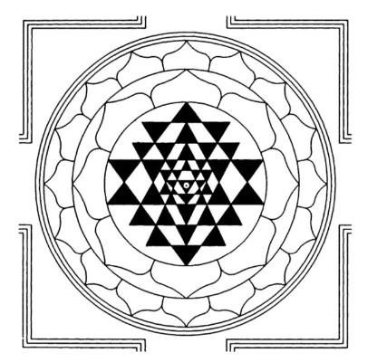

Welcome to
Abode of the Divine Mother · Seat of the Sacred Yantra
A sacred sanctuary dedicated to Devi Tripura Sundari — where the eternal cosmic geometry of the ShriChakra manifests as living grace.
Our Heritage
ShriChakra Mandiram was consecrated over five decades ago, anchored in the ancient Shakta tradition. The presiding deity, Devi Tripura Sundari — the most beautiful of the three worlds — is worshipped here through the living science of the ShriChakra yantra.
Our priests follow the Shodashopachara (16-step) method of worship, maintaining an unbroken lineage of Tantric ritual that spans generations.
Learn MoreDivine Offerings
Traditional Panchopachara and Shodashopachara worship performed four times daily with Vedic mantras.
Personal offerings and sacred bathing rituals of the deity performed on request with your name and nakshatra.
Fire rituals conducted for prosperity, protection, and spiritual liberation based on Tantric and Vedic procedures.
Weekly discourses on Devi Mahatmyam, Lalita Sahasranama, and the science of the ShriChakra Yantra.
Grand celebrations of Navaratri, Vijayadashami, Diwali, and monthly Pradosham and Amavasya pujas.
Annadanam (free meals), educational support, and charitable programs serving the local community.
"Ya Devi Sarvabhuteshu Shakti-rupena Samsthita— Devi Mahatmyam · Ratri Suktam
Namastasyai, Namastasyai, Namastasyai Namo Namah"
What's Coming
New Year puja, kalasha pooja, and Panchangam recitation at dawn.
FestivalAll-day celebrations with Sundarakanda parayana and special abhishekam.
MahotsavKani Darshan, special puja, and community feast for all devotees.
Seasonal